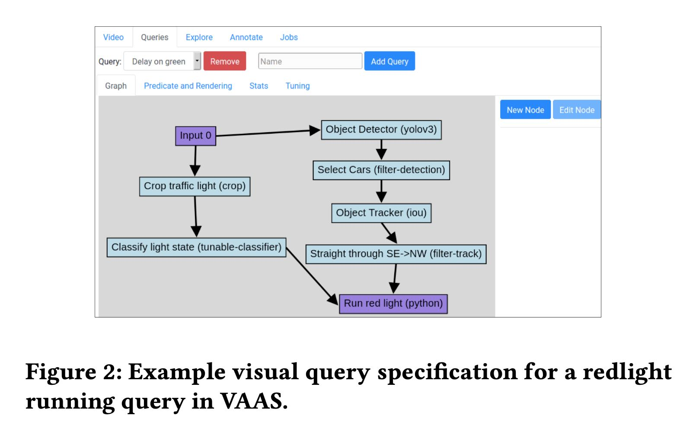
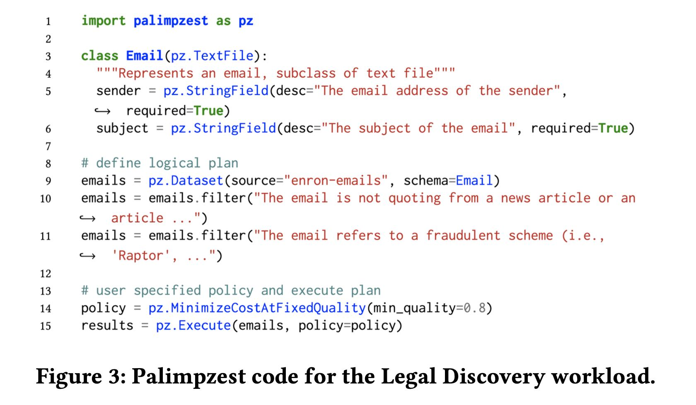
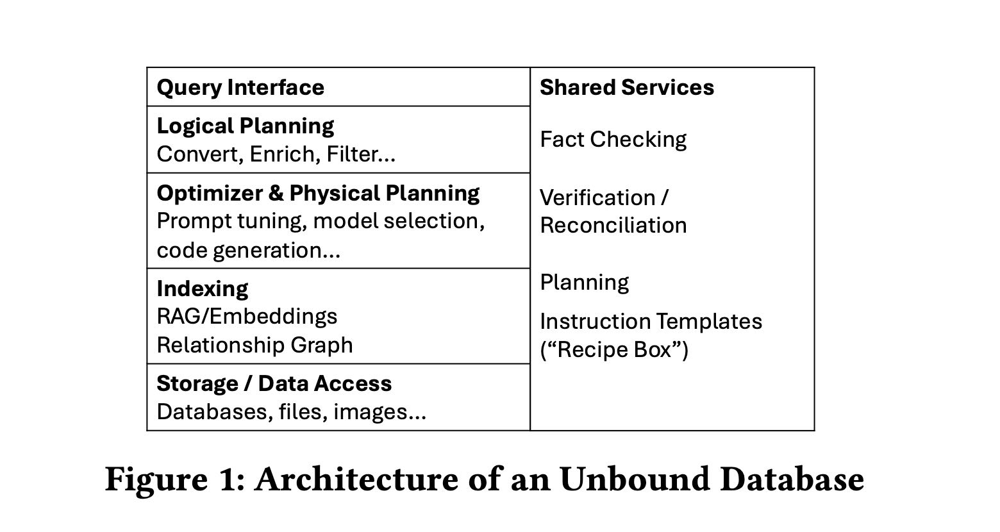

Databases Unbound Querying All of the World’s Bytes with AI
这篇文章主要展望一下，和AI结合之后，Database应该需要被什么样的能力，以及技术上可能会有什么挑战。文章后面作者给了两个系统：VAAS和Palimpzest. 其中VAAS是一个video检索系统，通过自然语言NL描述需求，然后系统会分解任务并且找到最优的执行算法。而Palimpzest则是一个python programming framework, 描述了和AI（尤其是LLM）结合之后应该提供的编程接口。
VAAS这里描述“找到run red light的车辆“，执行上我们可以 a)先找红绿灯的video, 然后寻找车辆 b) 先找车辆，然后对车辆按照某个方面进行筛选。

Palimpzest 框架里面的filter可以调用LLM来对内容进行过滤，但是具体怎么调用LLM(或者是通过llm code gen然后run code), 这个对于用户是完全透明的。

可以看到和AI(尤其是LLM更加强大的系统)之后，DB其实可以围绕AI做许多事情。但是能做什么事情，以及要做什么事情，感觉大家都不清楚。这篇文章则尝试来解答这些问题，数据库则变为unbounded database.
unbounded database相比之前的database, 有更多问题需要解决，和更大的设计空间，可以看到主要都是围绕LLM的。

[!NOTE] This new world of AI-powered data systems brings several ex- citing research opportunities:
Language. Although a natural choice of language for the data- base community would be a SQL-like (or perhaps pandas-like) lan- guage, we note that natural language interfaces (perhaps chat based) are also declarative (in the “say what I want, not how to do it” sense), and are a natural way for non-expert users like those described above to interface with a data system. We speculate that more peo- ple will use NL than SQL in the next 5 years to query data. Still SQL and its ilk will be an important as intermediate languages and targets for code generation.
Multi-objective optimization space. Traditionally, the DB community has focused on one objective: optimize performance. This is changing in the new world and as it becomes a mix of performance, cost, and quality.
Approximate and Adaptive Query Processing. Adaptive techniques are highly relevant in this context as the quality of pipelines depends on the data and complexity of the task, and the quality of the AI agents, and may not be easy to determine a priori.
Fact checking, correctness, and consistency. Users of data- base systems expect answers to be correct, but new AI systems are unreliable. Here, ideas from human-powered systems [9], such as majority voting and bad-rater detection will be important, but new techniques are needed. These may include asking models to verify each other’s answers or check them for bias and toxicity, repeat- edly reprocessing inputs to provide estimates of inconsistency or variation, and more.
Need for code generation. Code generation provides an im- mense opportunity for unstructured data to replace LLM invoca- tions – for example, replacing a call to an LLM with LLM-generated code that achieves a specific data process or extraction task.
在logical planning多加的算子convert和enrich. convert其实就是将非结构化数据变为tabular数据（比如文本情感变为具体的数值），而enrich则是将原始数据进行扩展(add columns/add rows etc)来丰富数据，得到的数据依然是tabular dataset.
prompt tunning是指如何选择有效的prompt来让LLM使用一定数量的tokens产生一定质量的dataset. 这里面是cost/quality/time之间的tradeoff. 这个tradeoff也包括model selection. code generation比较适合处理”带有一定逻辑性”的任务，结果没有办法直接使用LLM输出但是比较适合code处理。
storage上如何处理事务是个有挑战性的问题，首先是数据量特别大，另外是如何保证两个txn看到的数据一致的话，调用结果是完全一致的，就是predictability. 当然这个可预测性问题也穿插到了整个系统里面，对LLM部分的话可能只需要把temp设置成为0就可以确保输出完全一致，但是prompt tuning/model selection呢？是否有一致性的算法呢？